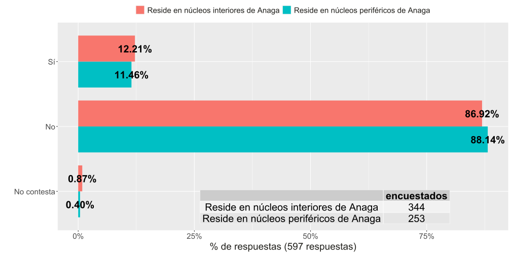
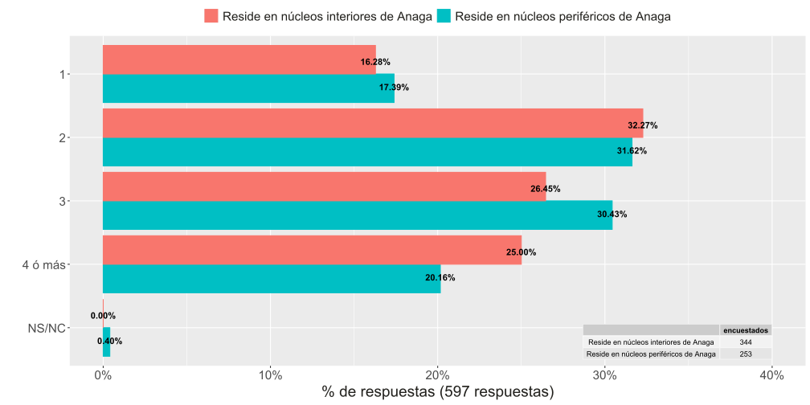

| Lugar de residencia | Lugar de trabajo | Total encuestados |
Práctica de deporte
|
||
|---|---|---|---|---|---|
| No practica deporte en Anaga | Practica otros deportes en Anaga | Practica ciclismo en Anaga | |||
| Reside en Anaga | No trabaja en Anaga | 450 | 314 | 115 | 21 |
| Trabaja en Anaga | 150 | 117 | 28 | 5 | |
| Reside en otras zonas de Tenerife | No trabaja en Anaga | 526 | 208 | 277 | 41 |
| Trabaja en Anaga | 72 | 32 | 37 | 3 | |
| No reside en Tenerife | No trabaja en Anaga | 210 | 210 | 0 | 0 |
| NS/NC (ya hizo la encuesta, sólo sorteo, etc.) | NA | 3 | 3 | 0 | 0 |
| TOTAL | — | 1411 | 884 | 457 | 70 |
Presentación de resultados de encuestación (perfil encuestado)
ESTRATEGIA DE MOVILIDAD SOSTENIBLE EN LA RESERVA DE LA BIOSFERA MACIZO DE ANAGA
✏️ Introducción
Proyecto de desarrollo para el Plan de Movilidad en la Reserva de la Biosfera del Macizo de Anaga, impulsado por el Cabildo de Tenerife en colaboración con la Universidad de La Laguna.
Estudio sobre grupos de población de interés con presencia en la Reserva
Diseño de cuestionario y encuestación sobre dichos grupos:
Encuesta personal sobre población residente (diseño muestral)
Cuestionario sobre población NO residente (formulario web)
✏️ Diseño muestral (I)
- Se propuso un diseño muestral para núcleos de menos de 1,000 residentes

✏️ Diseño muestral (II)
- Y otro diseño muestral para núcleos de más de 1,000 residentes

✔️️ Observaciones
El diseño se ha elaborado utilizando los principales los indicadores demográficos calculados para la delimitación territorial de malla de 250m de Canarias, a partir del Padrón Municipal de Habitantes (PMH) a fecha de 01/01/2022. Ver el siguiente enlace.
El propósito de separar núcleos de población de <1,000 habitantes de los núcleos más poblados es el de asegurar su correcta representación en la muestra.
Por tanto, el objetivo del diseño muestral es el de conseguir seleccionar una muestra representativa de la población residente en Anaga.
üìã Análisis de respuestas al cuestionario
üìã Respuestas no significativas
- El cuestionario no ha conseguido respuestas sobre algunos grupos
# A tibble: 2 × 2
perfil_vivienda_vacacional n
<chr> <int>
1 No es propietario ni mantiene vivienda vacacional en Anaga 1408
2 Propietario/mantiene vivienda vacacional en Anaga 3✔️ Observaciones
La encuesta tiene un número alto de respuestas:
- Residentes
- Trabajadores
- Visitantes del parque
Por tanto, se considera que hay un número suficientemente razonable de respuestas para realizar un análisis diferenciado según el perfil del encuestado
Por ejemplo, entre los visitantes es posible estudiar el perfil de aquellos que tienen como motivo de visita la práctica deportiva
üåá Análisis del lugar de residencia
En este análisis hemos agrupados los núcleos de residencia
Núcleos interiores de Anaga y núcleos periféricos de Anaga, frente a núcleos externos
Es un primer nivel de agregación para facilitar la interpretación de los resultados
üèòÔ∏è Agrupaci√≥n geográfica de los núcleos de Anaga

üèöÔ∏è Número de encuestas según la residencia
- La distribución de los encuestados según el lugar de residencia:
| Lugar de residencia | N |
|---|---|
| Reside en otras zonas de Tenerife | 598 |
| Reside en núcleos interiores de Anaga | 344 |
| Reside en núcleos periféricos de Anaga | 253 |
| No reside en Tenerife | 210 |
| Reside en Anaga | 3 |
| NS/NC (ya hizo la encuesta, sólo sorteo, etc.) | 3 |
| TOTAL | 1411 |
üèöÔ∏èÔ∏è Número de encuestas según la residencia
- Se muestra el número de respuestas por lugar de residencia del encuestado
üèöÔ∏è Número de respuestas según la residencia
- Veamos la comparación del número de encuestas frente al ojetivo del diseño muestral
| Lugar de residencia | Total respuestas | % respuestas sobre total | Tamaño muestral diseño | % respuestas sobre tamaño muestral | Población 2022 |
|---|---|---|---|---|---|
| Reside en núcleos interiores de Anaga | |||||
| Punta del Hidalgo | 50 | 14.5% | 51 | 98.0% | 2,249 |
| Bejía | 5 | 1.5% | NA | NA | NA |
| El Batán | 11 | 3.2% | 8 | 137.5% | 35 |
| Chinamada | 9 | 2.6% | 3 | 300.0% | 10 |
| Las Carboneras | 26 | 7.6% | 18 | 144.4% | 85 |
| Afur | 7 | 2.0% | 7 | 100.0% | 30 |
| Taborno | 13 | 3.8% | 9 | 144.4% | 42 |
| Catalanes | 4 | 1.2% | 5 | 80.0% | 20 |
| Roque Negro | 13 | 3.8% | 16 | 81.2% | 75 |
| Lomo de Las Bodegas | 7 | 2.0% | 4 | 175.0% | 15 |
| Casas de La Cumbre | 13 | 3.8% | 16 | 81.2% | 74 |
| Chamorga | 11 | 3.2% | 3 | 366.7% | 10 |
| Taganana | 65 | 18.9% | 86 | 75.6% | 403 |
| Almáciga | 29 | 8.4% | 30 | 96.7% | 140 |
| Benijo | 4 | 1.2% | 5 | 80.0% | 20 |
| Igueste de San Andrés | 77 | 22.4% | 99 | 77.8% | 472 |
| SubTotal | — | 100.0% | — | — | — |
| Reside en núcleos periféricos de Anaga | |||||
| Tegueste | 21 | 8.3% | 76 | 27.6% | 3,341 |
| Pedro Álvarez | 34 | 13.4% | 33 | 103.0% | 1,365 |
| Bajamar | 58 | 22.9% | 48 | 120.8% | 2,106 |
| Jardina | 23 | 9.1% | 27 | 85.2% | 1,169 |
| Las Mercedes | 43 | 17.0% | 19 | 226.3% | 838 |
| Valle Tahodio | 2 | 0.8% | NA | NA | NA |
| Cueva Bermeja | 2 | 0.8% | NA | NA | NA |
| María Jiménez | 6 | 2.4% | NA | NA | NA |
| Barrio de la Alegría | 1 | 0.4% | NA | NA | NA |
| Valleseco | 4 | 1.6% | NA | NA | NA |
| San Andrés | 49 | 19.4% | 49 | 100.0% | 2,135 |
| El Suculum | 10 | 4.0% | 10 | 100.0% | 411 |
| SubTotal | — | 100.0% | — | — | — |
| Reside en Anaga | |||||
| Núcleo desc. de Anaga | 3 | 100.0% | NA | NA | NA |
| SubTotal | — | 100.0% | — | — | — |
| TOTAL | 600 | — | 622 | — | 15045 |
üèöÔ∏è Distribuci√≥n geográfica del número de encuestas

✔️️ Observaciones
El margen de error de la encuesta se sitúa finalmente en un 5.7% tanto en núcleos de <1,000 habitantes (objetivo: 4.0%) como núcleos de >1,000 habitantes (objetivo: 5.0%)
En general no se ha podido llegar al número previsto de respuestas, sobre todo porque la población residente actual es menor que la del padrón a fecha del 2022
En Igueste, Taganana y Tegueste se han alcanzado un número bastante menor de respuestas frente a las previstas
Hubiera sido deseable reducir el margen de error pero la agrupación de los núcleos facilita el análisis.
üßë‚Äçü§ù‚Äçüßë Análisis de variables demográficas
Veamos algunas cuestiones relativas al perfil demográfico de los residentes
Comenzamos por la distribución por grupos de edad y por sexos
üë∂ üë¥ Análisis de grupos de edad
üë∂ üë¥ Distribuci√≥n por grupos de edad (I)
| Núcleo/Municipio/País de residencia |
Edad
|
TOTAL | |||||
|---|---|---|---|---|---|---|---|
| (18-30] | (30-40] | (40-50] | (50-60] | >60 | |||
| Reside en núcleos interiores de Anaga | Punta del Hidalgo | 4 | 4 | 14 | 15 | 13 | 50 |
| Bejía | 0 | 0 | 0 | 0 | 5 | 5 | |
| El Batán | 1 | 0 | 0 | 4 | 6 | 11 | |
| Chinamada | 0 | 0 | 0 | 1 | 8 | 9 | |
| Las Carboneras | 1 | 3 | 13 | 3 | 6 | 26 | |
| Afur | 0 | 0 | 1 | 2 | 4 | 7 | |
| Taborno | 2 | 2 | 2 | 6 | 1 | 13 | |
| Catalanes | 3 | 0 | 0 | 0 | 1 | 4 | |
| Roque Negro | 5 | 0 | 2 | 0 | 6 | 13 | |
| Lomo de Las Bodegas | 0 | 0 | 0 | 2 | 5 | 7 | |
| Casas de La Cumbre | 1 | 3 | 4 | 4 | 1 | 13 | |
| Chamorga | 0 | 2 | 1 | 3 | 5 | 11 | |
| Taganana | 9 | 10 | 10 | 13 | 23 | 65 | |
| Almáciga | 1 | 5 | 7 | 9 | 7 | 29 | |
| Benijo | 0 | 2 | 0 | 1 | 1 | 4 | |
| Igueste de San Andrés | 7 | 9 | 22 | 16 | 23 | 77 | |
| SubTotal | — | 34 | 40 | 76 | 79 | 115 | 344 |
| Reside en núcleos periféricos de Anaga | Tegueste | 2 | 2 | 7 | 9 | 1 | 21 |
| Pedro Álvarez | 5 | 6 | 2 | 7 | 14 | 34 | |
| Bajamar | 5 | 13 | 14 | 12 | 14 | 58 | |
| Jardina | 0 | 2 | 6 | 9 | 6 | 23 | |
| Las Mercedes | 1 | 7 | 18 | 7 | 10 | 43 | |
| Valle Tahodio | 0 | 0 | 0 | 1 | 1 | 2 | |
| Cueva Bermeja | 0 | 0 | 0 | 2 | 0 | 2 | |
| María Jiménez | 0 | 0 | 4 | 1 | 1 | 6 | |
| Barrio de la Alegría | 0 | 1 | 0 | 0 | 0 | 1 | |
| Valleseco | 0 | 0 | 4 | 0 | 0 | 4 | |
| San Andrés | 10 | 6 | 3 | 13 | 17 | 49 | |
| El Suculum | 0 | 4 | 1 | 3 | 2 | 10 | |
| SubTotal | — | 23 | 41 | 59 | 64 | 66 | 253 |
| Reside en Anaga | Núcleo desc. de Anaga | 0 | 1 | 0 | 0 | 2 | 3 |
| SubTotal | — | 0 | 1 | 0 | 0 | 2 | 3 |
| TOTAL | — | 57 | 82 | 135 | 143 | 183 | 600 |
üë∂ üë¥ Distribuci√≥n por grupos de edad (II)
| Lugar de residencia | n | Edad |
|---|---|---|
| Reside en núcleos interiores de Anaga | 344 | |
| Reside en núcleos periféricos de Anaga | 253 | |
| Reside en Anaga | 3 | |
| TOTAL | 600 | — |
üßë üë© Distribuci√≥n por sexos (I)
üßë üë© Distribuci√≥n por sexos (II)
Género
|
TOTAL | ||
|---|---|---|---|
| Reside en núcleos interiores de Anaga | 177 | 164 | 341 |
| Reside en núcleos periféricos de Anaga | 127 | 125 | 252 |
| Reside en Anaga | 1 | 2 | 3 |
| TOTAL | 305 | 291 | 596 |
üßë üë© Distribuci√≥n por sexos (III)
Género
|
|
|---|---|
| HOMBRE | MUJER | |
| Reside en núcleos interiores de Anaga | |
| Reside en núcleos periféricos de Anaga | |
| Reside en Anaga |
üßë‚Äçü§ù‚Äçüßë üó∫Ô∏è Distribuci√≥n geográfica por sexos
✔️️ Observaciones
Distribución por edades muestra desplazamiento hacia edades más altas en núcleos interiores de Anaga.
En los núcleos grandes hay un reparto más homogéneo
Distribución más equitativa de respuestas por género en los núcleos
Hay desbalanceo en el género en algunos núcleos pequeños
üßë‚Äçü§ù‚Äçüßë Análisis de variables socio-econ√≥micas
También podemos analizar cuestiones relativas al entorno socio-laboral
Comenzamos por la distribución según variable situación laboral y la distribución de encuestados que trabajan dentro Anaga
También analizamos aspectos como la movilidad y el tamaño del núcleo familiar
üë∑ Situaci√≥n laboral de encuestados (I)
- Agrupamos las respuestas del cuestionario a la pregunta de la situación laboral
| Situación laboral (categoría agrupada) | Situación laboral (alternativa del cuestionario) |
|---|---|
| Activo laboral | Trabajo por cuenta ajena |
| Trabajo por cuenta propia con un establecimiento abierto al público | |
| Trabajo por cuenta propia sin un establecimiento abierto al público | |
| Inactivo laboral, trabajador de hogar o estudiante | Dedicado a las labores del hogar, al cuidado de niños u otras personas |
| Estudiante, escolar, o en formación | |
| Incapacitado permanente para trabajar | |
| Jubilado, retirado, jubilado anticipado | |
| Otra clase de inactividad económica | |
| Parado | |
| NS/NC | No contesta |
| NA |
üë∑ Situaci√≥n laboral de encuestados (I)
| Núcleo/Municipio/País de residencia |
Situación laboral
|
|||
|---|---|---|---|---|
| Activo laboral | Inactivo laboral, trabajador de hogar o estudiante | NS/NC | ||
| Reside en núcleos interiores de Anaga | Punta del Hidalgo | 30 | 20 | 0 |
| Bejía | 0 | 5 | 0 | |
| El Batán | 4 | 7 | 0 | |
| Chinamada | 4 | 5 | 0 | |
| Las Carboneras | 17 | 9 | 0 | |
| Afur | 3 | 4 | 0 | |
| Taborno | 7 | 2 | 4 | |
| Catalanes | 2 | 2 | 0 | |
| Roque Negro | 6 | 7 | 0 | |
| Lomo de Las Bodegas | 1 | 6 | 0 | |
| Casas de La Cumbre | 10 | 3 | 0 | |
| Chamorga | 5 | 6 | 0 | |
| Taganana | 36 | 27 | 2 | |
| Almáciga | 15 | 13 | 1 | |
| Benijo | 3 | 1 | 0 | |
| Igueste de San Andrés | 39 | 37 | 1 | |
| SubTotal | — | 182 | 154 | 8 |
| Reside en núcleos periféricos de Anaga | Tegueste | 20 | 1 | 0 |
| Pedro Álvarez | 16 | 18 | 0 | |
| Bajamar | 35 | 23 | 0 | |
| Jardina | 18 | 5 | 0 | |
| Las Mercedes | 23 | 19 | 1 | |
| Valle Tahodio | 1 | 1 | 0 | |
| Cueva Bermeja | 2 | 0 | 0 | |
| María Jiménez | 5 | 1 | 0 | |
| Barrio de la Alegría | 1 | 0 | 0 | |
| Valleseco | 4 | 0 | 0 | |
| San Andrés | 26 | 22 | 1 | |
| El Suculum | 7 | 2 | 1 | |
| SubTotal | — | 158 | 92 | 3 |
| Reside en Anaga | Núcleo desc. de Anaga | 1 | 2 | 0 |
| SubTotal | — | 1 | 2 | 0 |
| TOTAL | — | 341 | 248 | 11 |
üë∑ Situaci√≥n laboral de encuestados (II)
üë∑ Situaci√≥n laboral de encuestados (III)
Se observa que la distribución de la situación laboral de los encuestados no es homogénea entre los núcleos interiores y periféricos de Anaga.
Podemos calcular el nivel de significación estadística del cambio en la distribución.
Fisher's Exact Test for Count Data
data: .
p-value = 0.03429
alternative hypothesis: true odds ratio is not equal to 1
95 percent confidence interval:
0.4851275 0.9748392
sample estimates:
odds ratio
0.6885975 üõ†Ô∏è Distribuci√≥n de encuestados que trabajan en Anaga (I)
| Lugar de residencia | Total respuestas |
Lugar de trabajo
|
|
|---|---|---|---|
| Trabaja en Anaga | No trabaja en Anaga | ||
| Reside en núcleos interiores de Anaga | 344 | 24.42% | 75.58% |
| Reside en núcleos periféricos de Anaga | 253 | 26.09% | 73.91% |
| Reside en Anaga | 3 | 0.00% | 100.00% |
| Reside en otras zonas de Tenerife | 598 | 12.04% | 87.96% |
| TOTAL | 1198 | — | — |
üõ†Ô∏è Distribuci√≥n de encuestados que trabajan en Anaga (II)
üõ†Ô∏è Distribuci√≥n de encuestados que trabajan en Anaga (III)
- No se puede considerar que haya un relación entre residir y trabajar dentro de Anaga entre los núcleos interiores y periféricos.
Fisher's Exact Test for Count Data
data: .
p-value = 0.7026
alternative hypothesis: true odds ratio is not equal to 1
95 percent confidence interval:
0.620091 1.354927
sample estimates:
odds ratio
0.9155215 ü뮂Äçü¶Ω Distribuci√≥n de encuestados con problemas de movilidad (I)
| Núcleo/Municipio/País de residencia |
Movilidad reducida
|
||
|---|---|---|---|
| Sí | No | ||
| Reside en núcleos interiores de Anaga | Punta del Hidalgo | 10 | 40 |
| Bejía | 2 | 3 | |
| El Batán | 1 | 10 | |
| Chinamada | 2 | 7 | |
| Las Carboneras | 1 | 25 | |
| Afur | 2 | 5 | |
| Taborno | 2 | 11 | |
| Catalanes | 2 | 2 | |
| Roque Negro | 1 | 11 | |
| Lomo de Las Bodegas | 1 | 6 | |
| Casas de La Cumbre | 1 | 11 | |
| Chamorga | 0 | 10 | |
| Taganana | 2 | 63 | |
| Almáciga | 5 | 24 | |
| Benijo | 2 | 2 | |
| Igueste de San Andrés | 8 | 69 | |
| SubTotal | — | 42 | 299 |
| Reside en núcleos periféricos de Anaga | Tegueste | 1 | 20 |
| Pedro Álvarez | 3 | 31 | |
| Bajamar | 5 | 53 | |
| Jardina | 5 | 18 | |
| Las Mercedes | 7 | 36 | |
| Valle Tahodio | 0 | 2 | |
| Cueva Bermeja | 0 | 2 | |
| María Jiménez | 0 | 6 | |
| Barrio de la Alegría | 0 | 1 | |
| Valleseco | 0 | 4 | |
| San Andrés | 8 | 40 | |
| El Suculum | 0 | 10 | |
| SubTotal | — | 29 | 223 |
| Reside en Anaga | Núcleo desc. de Anaga | 0 | 2 |
| SubTotal | — | 0 | 2 |
| TOTAL | — | 71 | 524 |
ü뮂Äçü¶Ω Distribuci√≥n de encuestados con problemas de movilidad (II)
ü뮂Äçü¶Ω Distribuci√≥n de encuestados con problemas de movilidad (III)
- No hay relación estadística entre la situación de movilidad y el lugar de residencia (Reside en núcleos interiores de Anaga,Reside en núcleos periféricos de Anaga)
Fisher's Exact Test for Count Data
data: .
p-value = 0.7991
alternative hypothesis: true odds ratio is not equal to 1
95 percent confidence interval:
0.6348181 1.8580061
sample estimates:
odds ratio
1.080039 ü뮂Äçüë©‚Äçüë¶ Tama√±o (num. de miembros) del núcleo familiar de encuestados (I)
| Núcleo/Municipio/País de residencia |
Miembros familia
|
|||||
|---|---|---|---|---|---|---|
| 1 | 2 | 3 | 4 ó más | NS/NC | ||
| Reside en núcleos interiores de Anaga | Punta del Hidalgo | 11 | 11 | 11 | 17 | 0 |
| Bejía | 2 | 1 | 0 | 2 | 0 | |
| El Batán | 1 | 6 | 1 | 3 | 0 | |
| Chinamada | 0 | 7 | 2 | 0 | 0 | |
| Las Carboneras | 5 | 3 | 5 | 13 | 0 | |
| Afur | 2 | 2 | 3 | 0 | 0 | |
| Taborno | 1 | 3 | 1 | 8 | 0 | |
| Catalanes | 1 | 2 | 1 | 0 | 0 | |
| Roque Negro | 4 | 3 | 6 | 0 | 0 | |
| Lomo de Las Bodegas | 1 | 5 | 1 | 0 | 0 | |
| Casas de La Cumbre | 0 | 5 | 3 | 5 | 0 | |
| Chamorga | 4 | 4 | 2 | 1 | 0 | |
| Taganana | 4 | 25 | 21 | 15 | 0 | |
| Almáciga | 3 | 11 | 11 | 4 | 0 | |
| Benijo | 0 | 0 | 1 | 3 | 0 | |
| Igueste de San Andrés | 17 | 23 | 22 | 15 | 0 | |
| SubTotal | — | 56 | 111 | 91 | 86 | 0 |
| Reside en núcleos periféricos de Anaga | Tegueste | 1 | 6 | 7 | 7 | 0 |
| Pedro Álvarez | 8 | 7 | 14 | 5 | 0 | |
| Bajamar | 11 | 19 | 12 | 16 | 0 | |
| Jardina | 4 | 5 | 8 | 6 | 0 | |
| Las Mercedes | 7 | 19 | 12 | 4 | 1 | |
| Valle Tahodio | 0 | 0 | 0 | 2 | 0 | |
| Cueva Bermeja | 0 | 1 | 0 | 1 | 0 | |
| María Jiménez | 1 | 3 | 2 | 0 | 0 | |
| Barrio de la Alegría | 1 | 0 | 0 | 0 | 0 | |
| Valleseco | 1 | 1 | 1 | 1 | 0 | |
| San Andrés | 8 | 15 | 20 | 6 | 0 | |
| El Suculum | 2 | 4 | 1 | 3 | 0 | |
| SubTotal | — | 44 | 80 | 77 | 51 | 1 |
| Reside en Anaga | Núcleo desc. de Anaga | 0 | 1 | 1 | 1 | 0 |
| SubTotal | — | 0 | 1 | 1 | 1 | 0 |
| TOTAL | — | 100 | 192 | 169 | 138 | 1 |
ü뮂Äçüë©‚Äçüë¶ Tama√±o (num. de miembros) del núcleo familiar de encuestados (II)
ü뮂Äçüë©‚Äçüë¶ Tama√±o (num. de miembros) del núcleo familiar de encuestados (III)
- De nuevo, se considera que la distribución en el tamaño de la familia de los encuestados es homogénea entre los núcleos interiores y periféricos de Anaga.
Fisher's Exact Test for Count Data with simulated p-value (based on
2000 replicates)
data: .
p-value = 0.4748
alternative hypothesis: two.sided✔️️ Observaciones
Aunque no hay relación entre residir en núcleos internos y periféricos y trabajar en Anaga, sí que existe asociación en la situación laboral de los encuestados.
Otros aspectos como la movilidad y el tamaño del núcleo familiar no han mostrado evidencias de relación frente a residir en núcleos internos y periféricos.